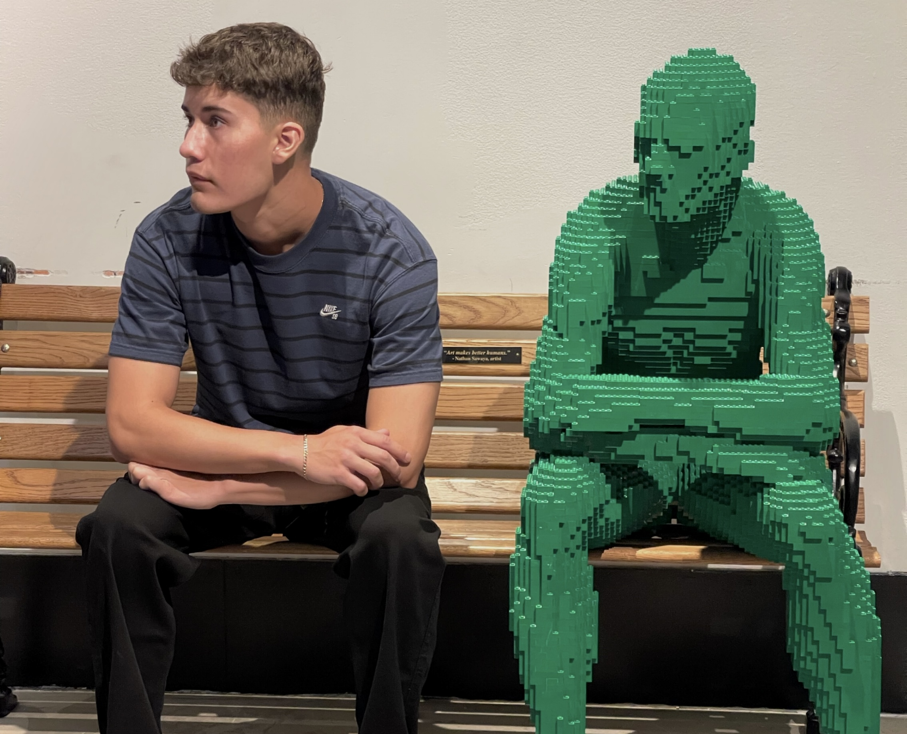

ABOUT

My name is Davis Morales. I'm a second-year Computer Science student at California Polytechnic State University. I was born in Torrance, California and have lived there my
entire life. I began my journey of coding in my freshman year of high school, by enrolling in an Intro to Computer Science course and joining the VEX Robotics Team. Some of my hobbies
include soccer, MMA, video games, and lifting.